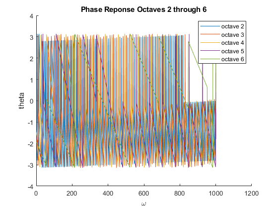

Contents
Piano Note Decoding: Lab P-14: 5 Lab Exercise
clc
clear
close all
5
idx = 1:5; % 5 filters
5.1a
lower normalized radial frequency of the octave
lowRad = ones(length(idx), 1); % the lowest octave starts at key 16 % Key 49 is 440 Hz, so 440*2^((16-49)/12) is the frequency of key 16 lowRad(1) = 440*2^((16-49)/12) / 8000 * 2 * pi; for k = 2:5 % each octave is double the previous lowRad(k) = lowRad(k-1) * 2; end % the high end of the octave is double the low highRad = 2.*lowRad; % low end frequencies in Hertz lowHertz = lowRad / 2 / pi; % high end frequencies in Hertz highHertz = highRad / 2 / pi;
5.1b
the center point of the octave
centerRad = sqrt(lowRad .* highRad); % the center in Hertz centerHertz = centerRad / 2 / pi; fprintf("Octave\t\tLower Edge(Hz)\t\tHigh Edge(Hz)\t\tCenter(Hz) \n"); for i = 1:5 fprintf("%d\t\t%f\t\t%f\t\t%f\n", i+1, lowHertz(i), highHertz(i), centerHertz(i)); end fprintf("\n"); fprintf("Octave\t\tLower Edge(rad)\t\tHigh Edge(rad)\t\tCenter(rad) \n"); for i = 1:5 fprintf("%d\t\t%f\t\t%f\t\t%f\n", i+1, lowRad(i), highRad(i), centerRad(i)); end
Octave Lower Edge(Hz) High Edge(Hz) Center(Hz) 2 0.008176 0.016352 0.011562 3 0.016352 0.032703 0.023125 4 0.032703 0.065406 0.046249 5 0.065406 0.130813 0.092499 6 0.130813 0.261626 0.184997 Octave Lower Edge(rad) High Edge(rad) Center(rad) 2 0.051370 0.102740 0.072648 3 0.102740 0.205480 0.145296 4 0.205480 0.410960 0.290593 5 0.410960 0.821921 0.581186 6 0.821921 1.643842 1.162372
5.2
5.2a.a
the instructions say this is nearly impossible
5.2a.b
see the lines surrounding the HH variable for scaling of the filters
5.2b and 5.2c
The BWL ratio is used to calculate L according to L = BWL / Bandwidth
BWL = 0.141372 * 81; % x axis in our plots ww = 0:(pi/1000):pi; % calculate L for filters L = BWL ./ (highRad - lowRad); % hamming windows, each will be of different lengths windows = cell(length(idx),1); figure title("Magnitude Reponse Octaves 2 through 6"); xlabel("\omega"); ylabel("|H|"); hold on; for i = idx % calculate the window using wc and L windows{i} = gen_hamming(centerRad(i),round(L(i))); % calculate magnitude and phase response of h HH = freqz(windows{i}, 1, ww); % normalize the coefficients such that the max is 1 windows{i} = windows{i} ./ max(HH); % recalculate HH using normalized coefficients HH = freqz(windows{i}, 1, ww); % plot magnitude, use ww / 2 / pi * 8000 for frequency on x axis plot(ww / 2 / pi * 8000, abs(HH)); end plot(centerHertz * 8000, ones(i, 1), 'o'); legend('octave 2', 'octave 3', 'octave 4', 'octave 5', 'octave 6', 'Center Frequencies'); hold off WW = 0:pi/1000:pi; % frequency range figure title("Phase Reponse Octaves 2 through 6"); xlabel("\omega"); ylabel("theta"); hold on; for i = idx % calculate the window using wc and L windows{i} = gen_hamming(centerRad(i),round(L(i))); % calculate magnitude and phase response of h HH = freqz(windows{i}, 1, ww); % normalize the coefficients such that the max is 1 windows{i} = windows{i} ./ max(HH); % recalculate HH using normalized coefficients HH = freqz(windows{i}, 1, ww); % plot magnitude, use ww / 2 / pi * 8000 for frequency on x axis %plot(ww / 2 / pi * 8000, abs(HH)); plot(angle(HH)); end %plot(centerHertz * 8000, ones(i, 1), 'o'); legend('octave 2', 'octave 3', 'octave 4', 'octave 5', 'octave 6'); hold off
5.2d
yes the filter's passbands are narrow enough however, there is non-zero area where the magnitude response is below 0.5 yet above 0
5.3
5.3a
number of points in xx
N = 0.85*8000; % x(t) xx = zeros(N,1); % t t = zeros(N,1); for i = 1:N t(i) = i/8000; end % first segment goes to 0.25 seconds for i = 1:round(0.25*8000) % formula for first segment xx(i) = cos(2*pi*220*i / 8000); end % zero in between for i = round(0.25*8000) + 1:round(0.30*8000) xx(i) = 0; end % second segment goes from 0.30 to 0.55 for i = round(0.30*8000) + 1:round(0.55*8000) % formula for second segment xx(i) = cos(2*pi*880*i / 8000); end % zero in between for i = round(0.55*8000) + 1:round(0.60*8000) xx(i) = 0; end % third segment goes from 0.60 to 0.85 for i = round(0.60*8000) + 1:round(0.85*8000) % formula for third segment xx(i) = cos(2*pi*440*i / 8000) + cos(2*pi*1760*i / 8000); end
5.3b and 5.3c
matrix of outputs
output = zeros(length(xx), length(windows)); figure for i = idx % calculate output using convolution yy = conv(windows{i}, xx); % cut off the first L elements of the convolution output(:, i) = yy(round(L(i)):end); subplot(length(idx),1,i); % plot the output plot(t, abs(output(:,i))); ylim([0,1]) end sgtitle('Magnitude') % matrix of outputs output = zeros(length(xx), length(windows)); figure for i = idx % calculate output using convolution yy = conv(windows{i}, xx); % cut off the first L elements of the convolution output(:, i) = yy(round(L(i)):end); subplot(length(idx),1,i); % plot the output plot(t, angle(output(:,i))); ylim([0,1]) end sgtitle('Phase')


5.3d
Yes, the output signals have the correct magnitude and phase
5.3e
The transient time for the second lowest filter is 0.0142s The transient time for the third lowest filter is 0.006s The transient time for the fourth lowest filter is 0.004s The transient time for the fifth lowest filter is 0.0015s